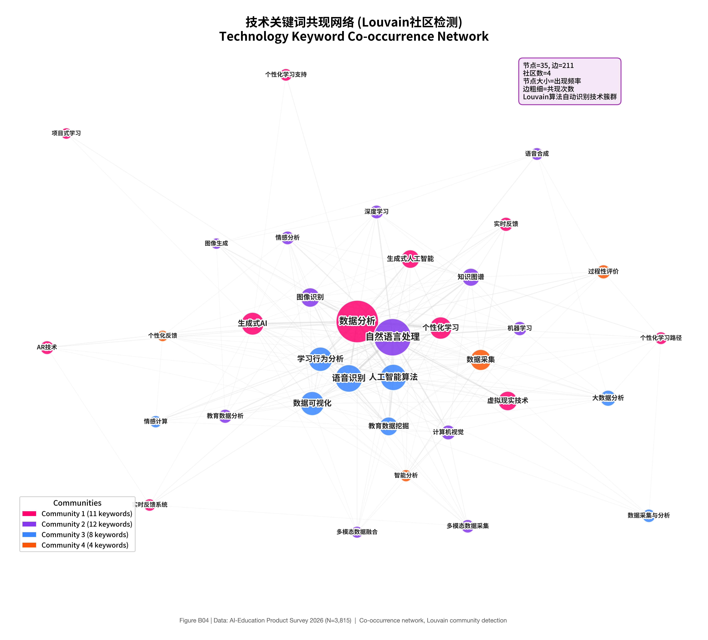
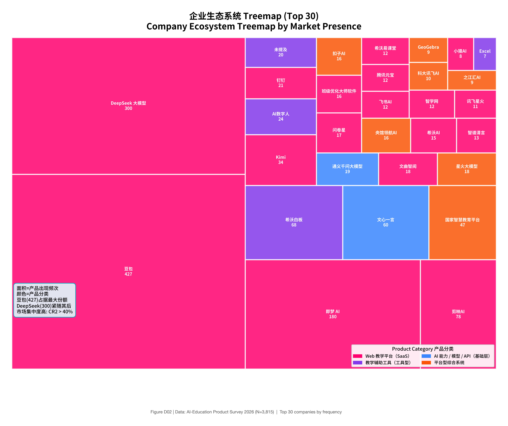
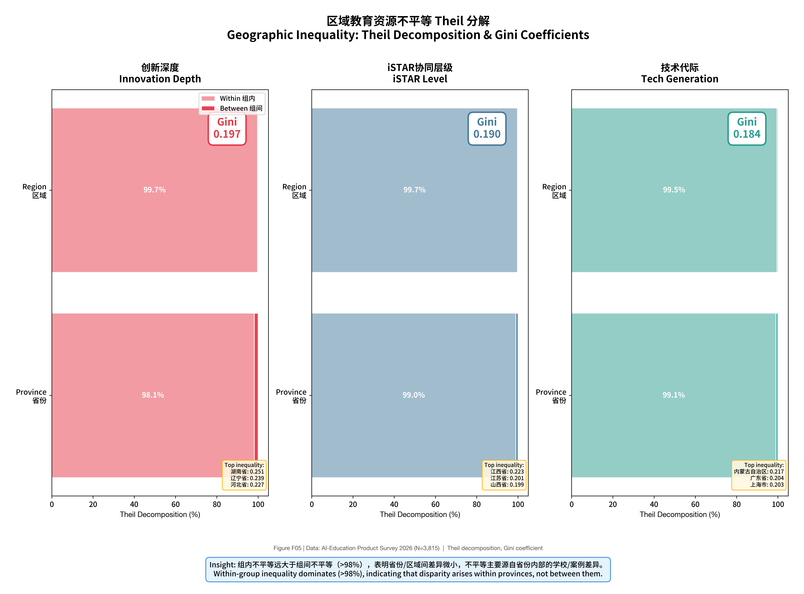
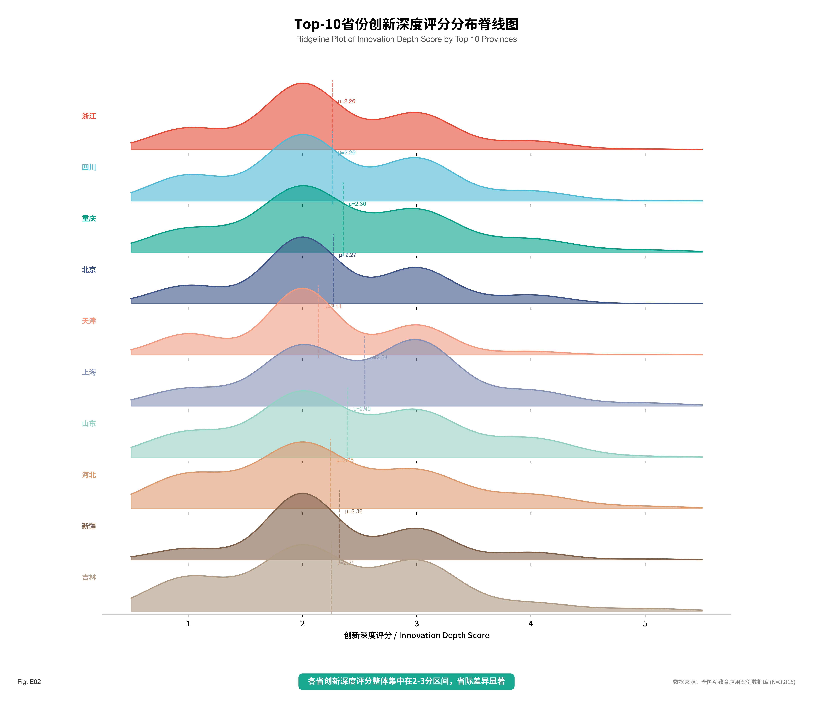
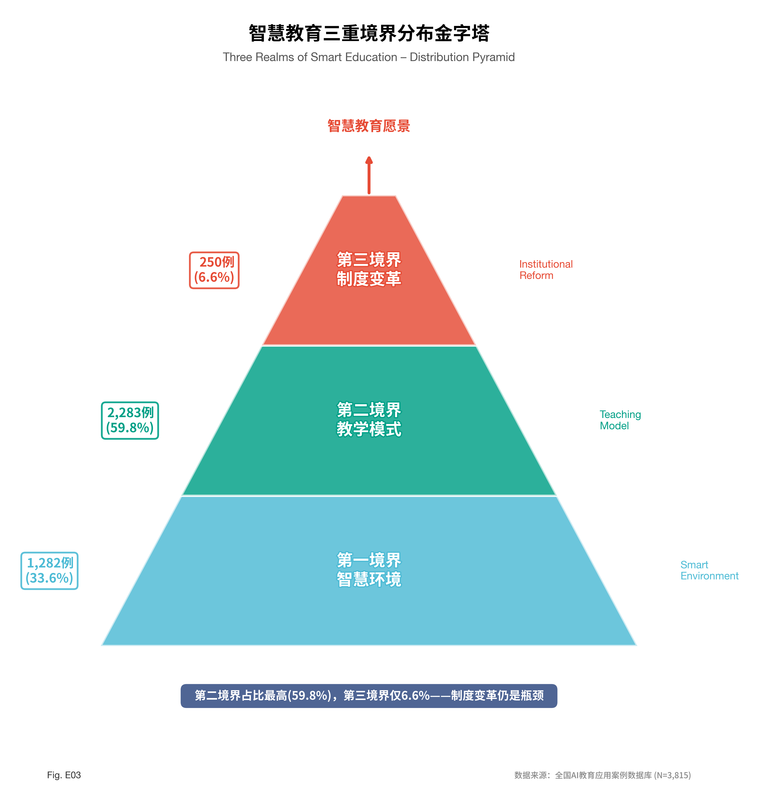
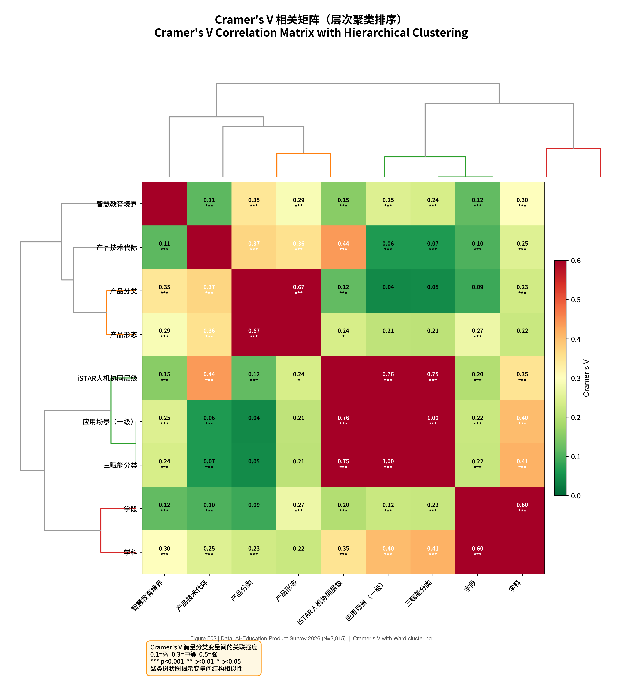
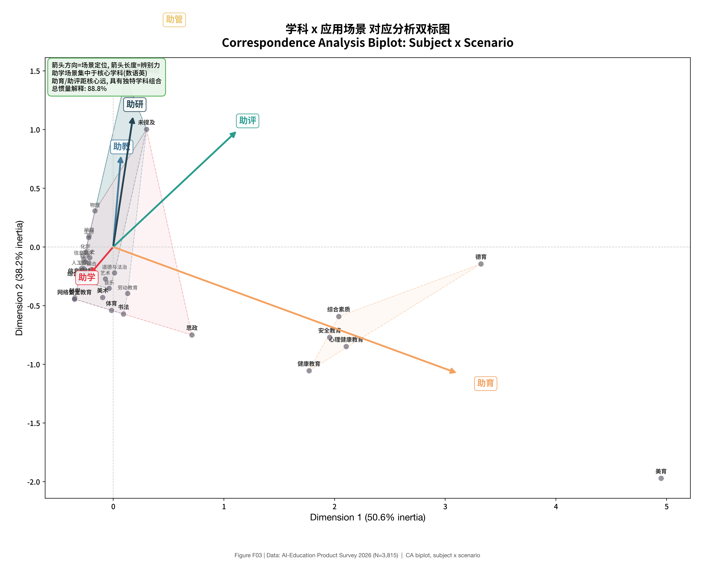
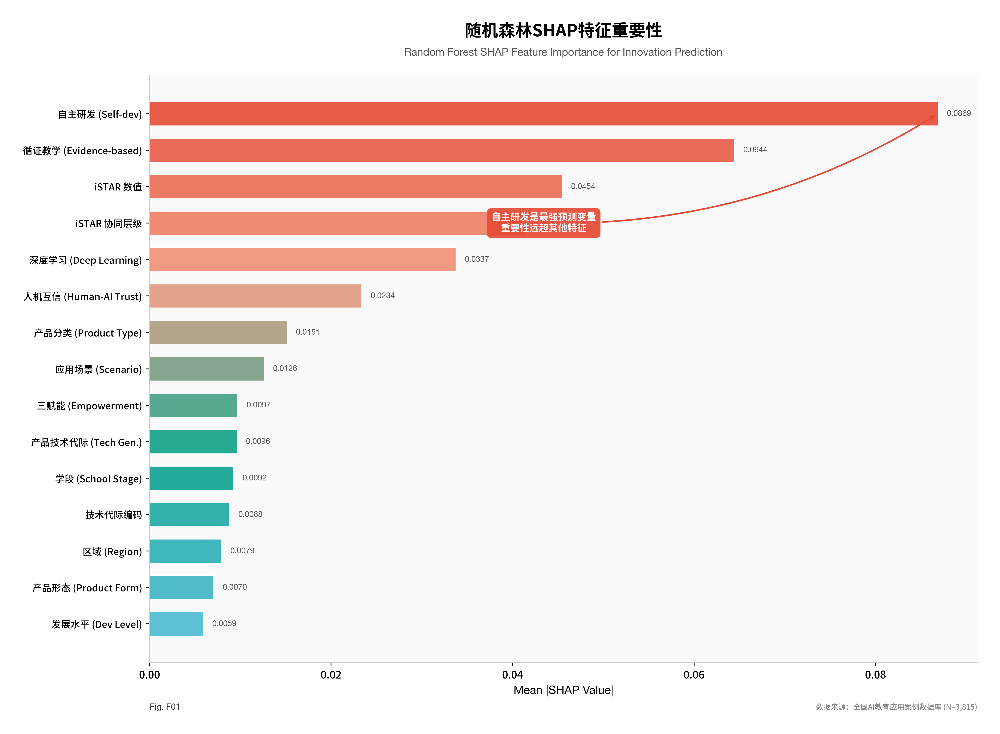

图14 三赋能框架与iSTAR人机协同层级映射
人工智能作为引领新一轮科技革命和产业变革的战略性技术，正在深刻改变人类社会的生产方式、生活方式和教育方式。2017年，国务院印发《新一代人工智能发展规划》，明确提出”利用智能技术加快推动人才培养模式、教学方法改革，构建包含智能学习、交互式学习的新型教育体系”（国务院，2017）。2022年，教育部启动实施国家教育数字化战略行动，将人工智能与教育的深度融合作为教育现代化的重要引擎（教育部，2022）。2024年以来，以ChatGPT、文心一言、豆包等为代表的大语言模型（Large Language Models, LLMs）的快速普及，进一步加速了AI技术向基础教育领域的渗透，催生了大量教学创新实践。
在政策驱动与技术推动的双重作用下，全国各地基础教育教师积极探索AI赋能教学的多元路径。然而，这些分散的实践探索尚缺乏系统性的实证研究加以梳理和总结。当前，AI教育应用究竟呈现怎样的实践图景？技术栈的构成与演化逻辑如何？教育科技产业生态具有哪些结构性特征？这些问题的回答，对于理解AI与基础教育融合的现实状态、识别发展瓶颈、制定科学的推进策略具有重要的理论价值和实践意义。
基于上述背景，本研究提出以下三个核心研究问题：
RQ1：当前AI赋能基础教育的教学应用呈现怎样的实践图景？在学段、学科、场景、五育等维度上具有哪些结构性特征？
RQ2：AI教育应用的技术栈如何构成？存在哪些典型的技术路径模式？
RQ3：AI教育科技产业生态具有哪些特征？市场格局、供给结构与区域差异如何？
本研究的理论贡献在于：第一，基于大规模真实案例数据，为AI教育应用研究提供了扎实的实证基础，弥补了现有研究多依赖小样本或理论推演的不足；第二，构建了”教育—技术—产业”三维分析框架，拓展了AI教育研究的分析视角；第三，通过混合方法的综合运用，揭示了AI教育应用的深层结构与内在逻辑。实践层面，研究发现可为教育行政部门的政策制定、学校的技术选型决策以及企业的产品研发方向提供参考依据。
人工智能与教育的融合研究植根于多个理论传统。国际上，从技术整合到人机协同，学者们提出了一系列具有影响力的理论框架；国内则以智慧教育、数字教学法等领域的原创性理论建构为特色，为理解AI教育应用提供了多元化的分析视角。
（1）智慧教育的”三重境界”理论。 智慧教育”三重境界”理论（黄荣怀，2014；2023a）将智慧教育划分为三重递进境界：第一境界为智慧学习环境，旨在通过智能技术构建感知化、泛在化的学习空间以”传递教育智慧”；第二境界为新型教学模式，通过技术驱动的教学创新”启迪学生智慧”；第三境界为现代教育制度，通过制度层面的系统性变革”孕育人类智慧”。该理论进一步凝练了智慧教育的五大核心特征——感知（Sensible）、适配（Adaptable）、关爱（Caring）、公平（Equitable）、和谐（Orchestrating），构成了评估教育智能化水平的理论标尺。这一框架与祝智庭和彭红超（2020）提出的”技术赋能—模式创新—生态重构”智能教育演进逻辑形成互补，共同勾勒了智慧教育的理论图景。
（2）”数字教学法”四维框架。 面对数字技术对教育的深层变革，”数字教学法”（Digital Pedagogy）理论（黄荣怀等，2024a）提出了迈向数字时代教学变革的基本框架，包含四个核心维度：技术赋能的深度学习（Technology-Enabled Deep Learning）、绿色鲁棒的数字学习环境（Green and Robust Digital Learning Environments）、循证导向的教学实践（Evidence-Oriented Teaching Practices）和人机互信的协同教育（Human-Machine Collaborative Education）。该框架超越了传统的技术整合视角，将数字技术视为教学变革的内生动力而非外部工具，强调从环境、资源到教学法的系统性转型。数字教学法的提出标志着教育技术研究从”如何用技术”转向”技术如何重塑教学的本体论基础”，为分析AI教育应用的深层逻辑提供了新的理论透镜。
（3）iSTAR人机协同框架。 在人机协同层面，iSTAR框架（Intelligent Synergies between Humans, Digital Twins, Avatars/Agents, and Robots）（Huang et al., 2023）系统描绘了人类与数字孪生、虚拟化身/智能代理、教育机器人之间的智能协同图景。该框架将人机协同划分为四个递进层级：HUM(0)（纯人类教学）、HMC(1)（人机协作）、HM2C(2)（人机深度协同）和HMnC(3)（人机多元协同），并提出了”师—生—机”三元结构取代传统”师—生”二元结构的理论构想（黄荣怀等，2023b）。这一框架为评估AI教育应用中人机关系的演化阶段提供了精细化的分析工具。
（4）”教育场景泛化”理论。 “教育场景泛化”理论深刻揭示了AI教育应用中的”双盲盒”现象——“技术黑盒子”（教育者不理解技术原理）与”方案空盒子”（技术方案缺乏教育内涵）并存（黄荣怀，2024b）。为破解这一困境，该理论提出了TSPE模型（Time时间、Space空间、People人物、Event事件）用于教育场景的精准识别，并构建了”需求洞悉—技术适配—场景创新—迭代生成”的闭环机制，强调技术介入后教育场景会发生”漂移/演化”，需要持续的动态调适。
在国际理论层面，Mishra和Koehler（2006）提出的TPACK（Technological Pedagogical Content Knowledge）框架强调技术知识（TK）、教学知识（PK）和学科内容知识（CK）三者的有机整合，是教师有效运用技术进行教学的关键。Puentedura（2006）的SAMR模型则从技术应用深度的角度，将技术整合划分为替代（Substitution）、增强（Augmentation）、修改（Modification）和重新定义（Redefinition）四个层次。Luckin等（2016）提出的”AIEd”框架强调AI应作为教师的智能助手而非替代者。Holmes等（2019）在此基础上进一步系统梳理了AI教育应用的承诺与局限，指出需要警惕技术决定论的倾向。Selwyn（2019）则从批判教育技术学的视角，提醒研究者关注AI教育应用中的权力结构与社会公平问题。此外，Dillenbourg（2013）提出的课堂编排（classroom orchestration）概念强调教师在多技术环境中协调和管理教学活动的核心角色，为理解人机协同教学提供了重要参照。联合国教科文组织（UNESCO，2021）从全球治理视角提出了AI教育应用的伦理原则与政策框架，强调公平性、透明性、可解释性和人类自主性等核心价值。
上述中外理论框架各有侧重、形成互补：国际理论框架在技术整合的微观机制分析和批判性审视方面具有优势，而国内学者构建的”数字教学法”“三重境界”“iSTAR”等理论体系则兼具宏观制度视野与微观教学分析能力，尤其是数字教学法框架将技术、环境、证据和人机关系统整为一体。本研究将综合运用这些理论资源，构建多层次的分析框架。
国际层面，AI教育应用研究经历了从专家系统、智能导学系统（ITS）到大语言模型驱动的三个发展阶段（Holmes et al., 2019）。早期研究聚焦于基于规则的智能导学系统的设计与效果评估（VanLehn, 2011），Baker和Inventado（2014）系统梳理了教育数据挖掘与学习分析的方法论基础，为数据驱动的教学改进奠定了技术基础。近年来，研究重心转向探讨生成式AI对教学实践的变革性影响（Kasneci et al., 2023）。Zawacki-Richter等（2019）对2007—2018年间146篇AI教育研究的系统综述发现，研究主要集中在学习分析、智能导学、自适应学习和自动评估四个领域，但对产业生态和大规模实践应用的关注不足。Webb等（2021）则聚焦机器学习在科学教育中的应用，揭示了AI技术在学科教学中的具体整合路径。在批判性视角方面，Selwyn（2019）提醒研究者警惕对教育技术的过度乐观叙事，强调需要审视AI教育应用中的社会公平和权力结构问题。
国内研究方面，祝智庭和彭红超（2020）系统梳理了智能教育的技术框架与发展路径，提出了”技术赋能—模式创新—生态重构”的演进逻辑。余胜泉（2023）从认知科学视角分析了大语言模型对教育的潜在影响，指出其在个性化学习支持、创造性思维培养等方面的独特价值。吴砥等（2023）基于全国教育信息化调查数据，分析了中小学AI教育应用的现状与挑战，发现区域差异显著、教师数字素养参差不齐等问题。任友群等（2022）则从教育信息化产业发展的角度，揭示了市场碎片化、标准缺失和区域发展不均衡等结构性问题。
教育科技（EdTech）产业生态研究是近年来兴起的交叉领域。Williamson（2021）从政治经济学视角分析了全球EdTech产业的资本化趋势与权力结构，指出平台化和数据化是当前EdTech产业的核心特征。国内学者方面，任友群等（2022）分析了中国教育信息化产业的发展历程与结构特征，指出市场碎片化、标准缺失和区域发展不均衡是突出问题。
在AI教育产业治理层面，”教育社会实验”理论（黄荣怀、王运武，2024）将人工智能变革教育视为一场”社会实验”，系统分析了其诉求、治理和建议，提出了”双向赋能”的产业逻辑——“科技赋能教育”与”教育赋值科技”相互促进，并针对AI教育产品的治理提出了”分类分级审查”和”黑白名单”机制，主张推动AI教育产品从”产品”向”服务”的形态转型。这一治理框架为理解AI教育产业生态的规范化发展提供了重要的政策分析视角。此外，相关研究还专门探讨了教育机器人的典型应用场景及技术治理问题（黄荣怀等，2024c），指出教育AI产品需要建立与教育场景相适配的分类治理体系。
“三赋能”框架（黄荣怀，2023c）则从需求侧提出了AI教育应用的价值创造逻辑：赋能学生（知识获取、自主学习、学习伴侣）、赋能教师（差异教学、增强教学、协同教学）、赋能学校（校园赋能、家校互联、泛在教育环境），以及”四观”转型——众创共享的知识观、智联建构的学习观、融通开放的课程观、人机协同的教学观。这一框架为从需求侧理解AI教育产业的价值创造逻辑提供了理论基础。
然而，现有产业生态研究多基于宏观统计数据或企业层面的案例分析，缺乏从一线教学实践出发、基于大规模微观数据的实证研究。本研究试图弥补这一空白，通过分析教师实际使用的AI工具及其背后的企业信息，从需求侧视角刻画EdTech产业生态的真实面貌。
综上所述，现有研究在以下方面存在不足：第一，大规模实证研究匮乏，多数研究基于小样本调查或理论推演，难以全面反映AI教育应用的实践全貌；第二，研究视角相对单一，鲜有研究同时关注教育、技术和产业三个维度；第三，对教师自发性实践探索的关注不足，现有研究多聚焦于顶层设计或实验干预，较少关注教师在真实教学情境中的AI应用行为（Dillenbourg, 2013; Webb et al., 2021）；第四，理论框架的综合运用不够充分，国际研究多依赖TPACK、SAMR等经典框架（Selwyn, 2019），国内实证研究也尚未充分发挥”数字教学法”“三重境界”“iSTAR”等本土理论框架的分析潜力，中外理论资源之间的对话与整合有待深化。
本研究基于1690个来自全国28个省份的真实教学案例，综合运用多种定量分析方法，从”教育—技术—产业”三个维度系统解构AI赋能基础教育的实践图景。在理论层面，本研究以”数字教学法”四维框架为核心分析透镜，融合智慧教育”三重境界”理论、iSTAR人机协同框架、”教育场景泛化”理论和”三赋能”框架等本土理论资源，同时借鉴SAMR模型、课堂编排理论（Dillenbourg, 2013）、教育数据挖掘（Baker & Inventado, 2014）等国际理论成果，构建了兼具理论深度和多元视角的分析体系，力图为该领域的理论建构和政策制定提供坚实的实证支撑。
本研究数据来源于全国基础教育教师AI教学案例征集活动。该活动面向全国中小学及幼儿园教师，征集其在教学实践中运用人工智能技术的典型案例。每个案例包含教师基本信息、所在学校与地区、教学学段与学科、所使用的AI工具及其应用场景、教学设计与实施过程等结构化与非结构化信息。经过数据清洗与质量筛选，最终获得有效案例1690个，涵盖全国28个省（自治区、直辖市），包含3815条AI工具使用记录，涉及1830种独立AI工具和1726家相关企业。
样本的地域分布呈现一定的集中性：浙江省贡献了最多的案例（432个，占25.6%），其次为四川（190个，11.2%）、重庆（166个，9.8%）和北京（135个，8.0%）。这一分布特征既反映了各地教育信息化发展水平的差异，也与活动组织推广力度有关，在结果解读时需予以注意。
本研究采用混合方法（Mixed Methods）研究设计，综合运用以下分析技术：
（1）描述性统计分析。 对案例的学段、学科、地域、应用场景、五育类型等基本特征进行频次统计与交叉分析，刻画AI教育应用的宏观分布格局。
（2）TF-IDF关键词提取与LDA主题建模。 对案例文本进行分词、去停用词等预处理后，采用TF-IDF（Term Frequency-Inverse Document Frequency）算法提取高频关键词，并运用LDA（Latent Dirichlet Allocation）主题模型（Blei et al., 2003）识别案例文本中的潜在主题结构。经过困惑度（Perplexity）和主题一致性（Coherence）指标的综合评估，最终确定7个主题为最优解。
（3）KMeans聚类分析。 基于案例的多维特征向量，采用KMeans聚类算法将案例划分为不同的实践类型。通过轮廓系数（Silhouette Score）和肘部法则（Elbow Method）确定最优聚类数为10，从而识别出10种典型的AI教学应用模式。
（4）技术路径模式挖掘。 通过对案例中AI工具的技术特征、应用流程和功能组合进行编码分析，提取典型的技术路径模式，揭示AI技术在教学过程中的作用机制。
（5）产业生态分析。 基于工具记录中的企业信息，分析市场集中度（采用CR5指标）、企业规模分布、自主研发比例等产业结构特征，并结合地域信息分析区域产业差异。
本研究构建了”教育—技术—产业”三维分析框架，并以多层理论体系为分析透镜，系统性地组织和呈现研究发现。
“教育—技术—产业”三维分析框架
- 教育维度：关注AI应用的教育属性，包括学段渗透、学科分布、应用场景、五育融合等。以”三赋能”框架为映射基础，将研究发现中的应用场景对应至”赋能学生”（助学）、”赋能教师”（助教）、”赋能学校”（助管/助育）三个层次，考察AI教育应用的价值创造结构；
- 技术维度：关注AI应用的技术构成，包括核心技术要素、技术路径模式、产品形态等。以数字教学法四维框架为分析透镜，从”技术赋能的深度学习”“绿色鲁棒的数字学习环境”“循证导向的教学实践”“人机互信的协同教育”四个维度审视技术路径的教育意涵；同时借鉴教育数据挖掘（Baker & Inventado, 2014）和课堂编排（Dillenbourg, 2013）的分析视角；
- 产业维度：关注AI教育工具背后的产业生态，包括市场格局、供给结构、区域差异等。以”双向赋能”理论（黄荣怀、王运武，2024）为分析视角，考察”科技赋能教育”与”教育赋值科技”的互动关系，并参照Williamson（2021）的平台资本主义分析框架审视产业权力结构。
三个维度相互关联、彼此支撑：教育需求驱动技术选择，技术能力约束教育创新的边界，产业生态则决定了技术供给的丰富度与可及性。在讨论部分，本研究进一步引入智慧教育”三重境界”理论评估当前AI教育应用的发展阶段，运用iSTAR框架（Huang et al., 2023）分析人机协同的演化层级，借助”教育场景泛化”理论解释应用场景集中化的深层逻辑。这一多层理论整合的分析框架，既呼应了智慧教育理论体系中”环境—模式—制度”的系统思维，又融入了国际批判教育技术学（Selwyn, 2019）和产业经济学的分析视角，为全面理解AI赋能基础教育的复杂现象提供了兼具理论深度与实证基础的结构化分析工具。
图14 三赋能框架与iSTAR人机协同层级映射
从学段分布来看（见表1），小学阶段是AI教学应用最为活跃的领域，占全部案例的52.7%（890个），远超其他学段。初中阶段占19.1%（323个），幼儿园和高中阶段分别占11.2%（189个）和11.1%（188个）。
表1 AI教学案例的学段分布
| 学段 | 案例数 | 占比 |
|---|---|---|
| 小学 | 890 | 52.7% |
| 初中 | 323 | 19.1% |
| 幼儿园 | 189 | 11.2% |
| 高中 | 188 | 11.1% |
| 其他 | 100 | 5.9% |
小学阶段的高渗透率可从多个角度加以解释：第一，小学教师群体基数最大，参与案例征集的概率相应较高；第二，小学阶段的课程弹性较大，教师拥有更多的教学创新空间；第三，AI工具在趣味化、可视化方面的优势与小学生的认知特点较为契合。相比之下，高中阶段受升学压力制约，教师采纳新技术的意愿和空间相对有限。值得注意的是，幼儿园阶段的AI应用占比达到11.2%，反映出AI技术向学前教育领域渗透的新趋势。

图2 AI教育案例的学段分布（华夫饼图）
图2以华夫饼图（waffle chart）呈现各学段的案例占比，每个方格代表约1%的案例份额。小学（蓝色）以超过半数的方格占据视觉中心，初中、幼儿园、高中各占一角，直观展示了”小学独大”的学段分布格局。
从地域分布来看（见表2），案例来源覆盖全国28个省份，但分布极不均衡。
表2 案例数量排名前十的省份
| 排名 | 省份 | 案例数 |
|---|---|---|
| 1 | 浙江 | 432 |
| 2 | 四川 | 190 |
| 3 | 重庆 | 166 |
| 4 | 北京 | 135 |
| 5 | 天津 | 113 |
| 6 | 山东 | 67 |
| 7 | 上海 | 65 |
| 8 | 河北 | 64 |
| 9 | 宁夏 | 56 |
| 10 | 吉林 | 51 |
浙江省以432个案例位居首位，显著领先于其他省份，这与浙江省在教育数字化领域的先发优势密切相关。

图1 1690个AI教育案例的省域分布热力图
图1以热力图形式呈现了1690个案例在全国28个省份的空间分布。颜色越深表示案例密度越高，浙江省呈现最深色调，浙、川、渝、京四省市构成第一梯队，而西北和东北地区色调明显较浅，直观揭示了AI教育应用的”东密西疏”空间格局。
浙江省较早推进”之江汇”教育广场等数字化平台建设，教师的数字素养和技术应用意识整体较强。四川、重庆的突出表现则可能与西南地区近年来教育信息化的快速推进以及活动组织方的区域推广策略有关。
对3815条工具使用记录的应用场景进行编码分析，本研究将AI教育应用场景划分为四个主要层次（见表3）。
表3 AI教育应用场景分布
| 场景类型 | 记录数 | 占比 | 典型应用 |
|---|---|---|---|
| 助学（辅助学生学习） | 2804 | 73.5% | 个性化学习推荐、智能答疑、学习资源生成 |
| 助教（辅助教师教学） | 669 | 17.5% | 课件制作、教案生成、教学设计优化 |
| 助育（辅助育人管理） | 126 | 3.3% | 心理健康监测、行为分析、家校沟通 |
| 助评（辅助教学评价） | 114 | 3.0% | 自动批改、学情分析报告、过程性评价 |
数据显示，”助学”类场景占据绝对主导地位（73.5%），表明当前AI教育应用的核心指向是直接服务于学生的学习过程。

图4 四类应用场景的案例体量对比（树图）
图4以树图（treemap）的面积编码直观呈现各应用场景的体量对比。”助学”类场景占据了图中约四分之三的面积，与”助教”“助育”“助评”等场景形成悬殊对比，几何面积的极端差异将前述助学占比转化为强烈的视觉冲击，凸显了当前AI教育应用场景的高度集中化特征。
这一发现与SAMR模型的分析逻辑相呼应：大部分AI应用仍处于”替代”（Substitution）和”增强”（Augmentation）层次，即用AI工具替代或增强传统的学习支持方式，而较少达到”修改”（Modification）和”重新定义”（Redefinition）的深层变革。
“助教”类场景占17.5%，主要体现为AI辅助教师进行教学准备工作，如利用大语言模型生成教案、制作课件、设计练习题等。”助育”和”助评”类场景占比较低（分别为3.3%和3.0%），反映出AI在育人管理和教学评价领域的应用尚处于起步阶段。
从五育维度分析（见表4），智育应用占据压倒性优势，占比高达72.6%。
表4 AI教育应用的五育分布
| 五育类型 | 记录数 | 占比 |
|---|---|---|
| 智育 | 2770 | 72.6% |
| 德育 | 464 | 12.2% |
| 美育 | 355 | 9.3% |
| 体育 | 115 | 3.0% |
| 劳育 | — | <0.5% |
智育的绝对主导地位反映了当前AI教育应用的工具理性取向——AI技术在知识传授、练习巩固、学情诊断等智育环节具有天然的技术适配性。德育应用（12.2%）主要体现为利用AI生成德育故事、模拟道德情境等；美育应用（9.3%）则集中在AI绘画、AI音乐创作等领域，这与即梦AI等图像生成工具的普及密切相关。体育和劳育的AI应用极为有限，分别仅占3.0%和不足0.5%，这既与这两个领域的实践性、身体性特征有关，也反映出当前AI技术在非认知领域的应用瓶颈。
五育分布的严重失衡值得警惕。《关于全面加强新时代大中小学劳动教育的意见》等政策文件强调五育并举、融合育人，但AI技术的应用现状显然与这一政策导向存在较大落差。如何拓展AI在德育、体育、美育和劳育领域的应用空间，是未来需要重点关注的议题。
然而，深度数据挖掘揭示了一个反直觉的发现：尽管非智育领域的AI应用数量远少于智育，但其人机协同深度反而更高。

图5 五育维度的案例数量与人机协同深度（雷达图）
图5以雷达图同时呈现五育各维度的案例数量与人机协同深度两组指标。智育在”数量”轴上一枝独大，但在”协同深度”轴上与美育、体育的差距反而缩小甚至落后，两组指标的交叉对比揭示了一个重要发现：规模优势不等于质量优势，非智育领域虽然体量小但创新深度更高。
具体而言，美育领域的HM2C（人机深度协同）占比达到51.0%，体育领域更高达52.2%，均显著高于智育领域的41.1%。这一发现表明，非智育领域虽然AI应用规模较小，但一旦教师选择在这些领域应用AI，往往会采用更深层次的人机协同模式——可能是因为这些领域的AI应用本身就需要更高的创造性和整合性，从而倒逼教师突破”工具替代”的浅层应用模式。
LDA主题建模识别出7个潜在主题（见表5），揭示了AI教学应用的主要创新方向。
表5 LDA主题建模结果（7个主题）
| 主题编号 | 主题标签 | 核心关键词 | 案例占比 |
|---|---|---|---|
| T1 | 智能学科教学 | 语文、数学、课堂、知识点、练习 | 较高 |
| T2 | AI辅助创意表达 | 绘画、创作、设计、作品、展示 | 中等 |
| T3 | 个性化学习支持 | 学情、诊断、推荐、自适应、反馈 | 中等 |
| T4 | 跨学科项目学习 | 项目、探究、合作、问题解决 | 中等 |
| T5 | 智能评价与反馈 | 评价、批改、分析、报告、数据 | 较低 |
| T6 | AI编程与计算思维 | 编程、代码、算法、机器人、逻辑 | 较低 |
| T7 | 情境化德育实践 | 品德、故事、情境、角色、体验 | 较低 |
主题T1（智能学科教学）占比最高，反映了AI应用与传统学科教学的紧密结合。主题T2（AI辅助创意表达）的出现则体现了生成式AI在创意领域的独特价值，教师利用AI绘画、AI写作等工具激发学生的创造力。主题T3（个性化学习支持）代表了AI教育应用的核心价值主张——基于学情数据的精准教学。主题T4（跨学科项目学习）表明AI技术正在成为跨学科整合的催化剂。
KMeans聚类分析进一步将1690个案例划分为10个实践集群，从更细粒度上揭示了AI教学应用的多样化模式。10个集群涵盖了从”大语言模型辅助语文读写”到”AI机器人编程教育”、从”智能学情分析驱动的精准教学”到”AI绘画赋能美术创作”等多种实践类型，体现了AI教育应用的丰富性和多元性。
图10 1690个案例的UMAP降维聚类可视化
图10以UMAP降维投影将1690个案例映射到二维平面，不同颜色标记10个聚类的边界。各聚类团簇分布清晰，部分团簇紧凑密集（如大语言模型辅助语文类），部分较为松散（如跨学科项目类），团簇间的距离与重叠程度反映了不同应用模式之间的相似性与差异性。
聚类轮廓的方差分析（ANOVA）进一步验证了10个集群在核心维度上的显著差异。 对连续变量的单因素方差分析显示，全部关键维度均呈现大效应量：D4人机互信维度的区分度最高（eta-squared=0.989, F=38359），其次为D3循证教学（eta-squared=0.778, F=1482）和D1深度学习（eta-squared=0.739, F=1198），创新深度评分的效应量亦达到大水平（eta-squared=0.455, F=353）。这表明10个聚类在数字教学法核心维度上具有高度差异化的特征轮廓，聚类结果具有良好的结构效度。

图23 聚类方差分析效应量对比（柱状图）
图23以柱状图呈现方差分析的效应量（eta-squared），D4人机互信的柱子远高于其他维度，直观显示了该维度对聚类区分的压倒性贡献力，证实10个实践集群在人机协同模式上具有根本性差异。
在类别变量上，产品技术代际（Cramer’s V=0.393, 中等效应）和三赋能分类（Cramer’s V=0.340, 中等效应）对聚类的区分贡献最大，而学段的区分力相对较弱（Cramer’s V=0.110, 小效应），提示AI教学应用的分化更多由技术选择和赋能方向驱动，而非学段差异。
对3815条工具记录的技术特征进行编码分析，识别出AI教育应用涉及的核心技术要素（见表6）。
表6 AI教育应用核心技术要素分布
| 技术类型 | 出现频次 | 典型工具 |
|---|---|---|
| 数据分析 | 343 | 各类学情分析平台 |
| 自然语言处理（NLP） | 278 | 豆包、DeepSeek、文心一言 |
| AI算法（综合） | 152 | 自适应学习引擎 |
| 语音识别 | 136 | 讯飞语音、语音评测工具 |
| 知识图谱 | 66 | 学科知识图谱平台 |
| 计算机视觉 | 45 | AI绘画、图像识别工具 |
数据分析技术以343次的出现频次位居首位，反映了”数据驱动”已成为AI教育应用的基础范式。自然语言处理（NLP）技术紧随其后（278次），这与大语言模型在教育领域的广泛应用直接相关。AI算法（152次）和语音识别（136次）分别位列第三和第四，前者主要应用于自适应学习和智能推荐，后者则在语言教学和口语评测中发挥重要作用。
从工具使用频次来看（见表7），大语言模型类产品占据主导地位。
表7 使用频次排名前五的AI工具
| 排名 | 工具名称 | 使用频次 | 占比 |
|---|---|---|---|
| 1 | 豆包 | 387 | 10.1% |
| 2 | DeepSeek | 289 | 7.6% |
| 3 | 即梦AI | 170 | 4.5% |
| 4 | 剪映AI | 78 | 2.0% |
| 5 | 希沃白板 | 67 | 1.8% |
豆包以387次使用（占比10.1%）位居榜首，DeepSeek以289次（7.6%）紧随其后，即梦AI以170次（4.5%）位列第三，剪映AI（78次，2.0%）和希沃白板（67次，1.8%）分列第四、第五。前三名工具均为国产生成式AI产品，其中豆包和DeepSeek为通用大语言模型，即梦AI为AI图像生成工具，三者均具有通用性强、使用门槛低、免费或低成本等特点；而第四名剪映AI为视频编辑工具，第五名希沃白板为教育专用交互平台，反映出教师对多模态内容创作工具的需求。这一发现表明，生成式AI已成为当前AI教育应用的”基础设施”，教师倾向于选择通用型AI工具而非专门的教育AI产品。
图6 AI教育工具使用频次Top20（水平条形图）
图6以水平条形图展示使用频次排名前20的AI工具。豆包和DeepSeek的条形长度显著领先，两者合计占比近18%，其后即梦AI、剪映AI等工具条形急剧缩短，形成典型的”陡坡式”下降曲线，直观反映了大语言模型在AI教育工具格局中的主导地位。
通过对案例中AI技术应用流程的编码分析，本研究识别出一条占主导地位的技术路径模式：
学习行为采集 → 学情诊断 → 个性化反馈 → 学习改进
这一路径模式体现了”数据驱动的精准教学”理念，其内在逻辑为：首先通过AI技术采集学生的学习行为数据（如答题记录、学习时长、交互轨迹等），然后基于数据分析进行学情诊断（识别知识薄弱点、学习风格等），进而生成个性化的学习反馈（如针对性练习推荐、学习路径调整等），最终促进学生的学习改进。
这一技术路径与智慧教育”感知—分析—决策—执行”闭环模型（黄荣怀等，2019）高度一致，也与国际上”学习分析”（Learning Analytics）领域的核心范式相呼应（Siemens & Baker, 2012; Baker & Inventado, 2014）。然而，需要指出的是，这一路径在实践中的完整实现程度参差不齐——许多案例仅涉及路径中的部分环节，真正实现全链条闭环的案例比例有限。

图7 技术要素-应用场景-教学环节的多级流转路径（桑基图）
图7以桑基图（Sankey diagram）可视化了从技术要素到应用场景再到教学环节的多级流转路径。左侧的NLP和数据分析节点最粗，汇入中间的”助学”主干流后分散至右侧的多个教学环节，路径的粗细直观反映了流量的大小，少数主干路径承载了绝大部分的技术应用流量。
4.2.3 产品形态演化
从产品形态来看，AI教育工具呈现出从”专用工具”向”通用平台”演化的趋势。早期的AI教育产品多为针对特定学科或特定功能的专用工具（如英语口语评测、数学自适应练习等），而当前的主流趋势是教师直接使用通用大语言模型（如豆包、DeepSeek等）进行教学创新。这一转变的驱动力在于：通用大模型的能力边界不断扩展，其在文本生成、对话交互、代码编写、图像生成等方面的综合能力已能覆盖大部分教学场景的需求。
与此同时，一批”AI+教育”垂直平台也在快速发展，它们在通用大模型的基础上叠加教育领域的专业知识和功能模块，提供更贴合教学需求的产品体验。这种”通用底座+垂直应用”的产品架构，正在成为AI教育产品的主流形态。

图8 AI教育大模型产品的市场定位与覆盖面（景观图）
图8以景观图呈现AI教育领域主要大模型产品的市场定位与应用覆盖面。横轴反映产品的通用性-垂直性定位，纵轴反映教育场景的覆盖广度，气泡大小编码使用频次，图中豆包和DeepSeek的气泡最为突出，居于”高通用性、宽覆盖”的象限。
4.2.4 工具组合效应与自主研发优势
进一步的统计分析揭示了工具使用模式与创新深度之间的显著关联。多工具组合案例的创新深度均分（2.77）显著高于单工具案例（1.80）（Mann-Whitney U检验, p<0.001），表明教师整合多种AI工具进行教学设计的能力是创新深度的重要预测因子。此外，自主研发工具案例的创新深度均分（3.27）显著高于采用第三方工具的案例（2.12）（p<0.001），这一差距高达1.15分（5分制），表明教师的技术自主性与教学创新深度之间存在强正向关联。工具数量与创新深度的Spearman相关系数达到0.625（p<0.001），进一步印证了”技术整合能力”而非”单一工具使用”才是AI教育创新的关键驱动力。
图9 AI工具共现关系网络图
图9以网络图呈现AI工具之间的共现关系，节点大小反映工具的使用频次，连线粗细反映工具被同一案例共同使用的频率。豆包、DeepSeek等节点居于网络中心，与多种工具形成密集连线，而大量小节点分布在网络外围仅有稀疏连线，网络的”核心-边缘”结构印证了”头部集中、尾部碎片化”的市场格局。
4.3 产业维度：EdTech生态系统分析
4.3.1 市场格局与集中度
3815条工具记录背后涉及1726家企业，反映出AI教育科技市场的参与主体极为多元。市场集中度分析显示（见表8），前五大企业的合计市场份额（CR5）仅为28.2%，表明市场呈高度碎片化特征。
表8 AI教育工具市场集中度
指标 数值 涉及企业总数 1726家 独立工具总数 1830种 CR5（前五大企业份额） 28.2% CR10（前十大企业份额） 33.2% 市场结构类型 高度碎片化 与成熟的互联网行业（如搜索引擎、社交媒体等CR5通常超过80%）相比，AI教育市场的集中度极低。即便将统计范围扩大至前十大企业，CR10也仅为33.2%，进一步印证了市场的高度分散性。

图11 AI教育工具市场集中度洛伦兹曲线
图11绘制了AI教育工具市场的洛伦兹曲线。曲线严重偏离45度均等线，呈现极端凸起形态：约80%的工具仅贡献了不到20%的市场份额，而前3%的工具贡献了超过50%的份额。曲线形态直观揭示了市场”二八分化”的极端特征。
更为引人注目的是，80.8%的AI教育工具仅被使用1次，呈现极端的长尾分布特征——1830种独立工具中有1479种仅出现一次，而排名前三的工具（豆包、DeepSeek、即梦AI）合计占据20.7%的市场份额。这一”二八分化”格局表明，AI教育工具市场同时存在”头部集中”和”尾部碎片化”两种看似矛盾的特征。
值得警惕的是，字节跳动生态（豆包+即梦AI+剪映AI）合计占据16.6%的市场份额（635条记录），形成了事实上的平台依赖。单一企业生态系统在AI教育工具市场中的主导地位，可能带来数据垄断、供应链风险和教育自主性削弱等问题，需要在产业治理中予以关注。
图12 EdTech产品生态的层次结构（嵌套树图）
图12以嵌套树图呈现EdTech产品生态的层次结构，外层按产品形态分组（软件平台、硬件+AI等），内层按具体企业填充。字节跳动生态（含豆包、即梦AI、剪映AI三个色块）在软件平台区域内占据最大面积，其体量优势在与1726家企业的整体碎片化形成鲜明对比后更加触目。
这一特征可从供需两端加以解释：从供给端看，大语言模型的开源化和API化降低了AI教育产品的开发门槛，大量中小企业和创业团队得以进入市场；从需求端看，教育场景的多样性和碎片化（不同学段、学科、地区的需求差异显著）使得单一产品难以形成垄断优势。
4.3.2 自主研发与外部采购
在1690个案例中，教师自主研发AI教学工具的比例为14.4%。这一比例虽然不高，但考虑到基础教育教师通常不具备专业的技术开发能力，14.4%的自主研发率实际上反映了一个值得关注的现象：部分教师已经具备了利用低代码/无代码平台或大模型API进行简单AI工具开发的能力。
从工具来源结构来看，外部采购或免费使用占85.6%，教师自主研发占14.4%。
自主研发的工具主要集中在以下类型：基于大语言模型API的学科问答机器人、利用低代码平台搭建的学情分析仪表盘、基于Python等编程语言开发的数据分析小工具等。这一现象表明，随着AI技术的”民主化”，教师正在从纯粹的技术消费者向”产消者”（Prosumer）转变，这对教师专业发展和教育技术生态都具有深远影响。
4.3.3 产业成熟度
综合市场集中度、产品标准化程度、用户黏性等指标判断，当前AI教育科技产业整体处于成长期早期阶段，具有以下特征：
第一，产品同质化与差异化并存。在通用大模型层面，各产品的功能趋同；但在垂直教育场景中，不同产品的教育适配度差异显著。
第二，商业模式尚未成熟。多数AI教育工具采用免费或免费增值（Freemium）模式，可持续的盈利模式尚在探索之中。教师在案例中使用的工具以免费产品为主，付费意愿和付费能力均有限。
第三，标准与规范缺失。AI教育产品的质量评估标准、数据安全规范、教育适切性认证等制度建设滞后于技术发展和市场扩张的速度。
第四，生态协同不足。工具之间的互操作性差，数据孤岛现象普遍，尚未形成开放、协同的产业生态系统。
4.3.4 区域产业差异
区域分析揭示了AI教育产业发展的显著地域差异。东部沿海地区（尤其是浙江、北京、上海、广东等）在案例数量、工具多样性和自主研发比例等方面均明显领先，这与这些地区的经济发展水平、教育信息化基础和科技产业集聚效应密切相关。
中西部地区虽然在案例总量上相对较少，但四川、重庆等省市表现突出，显示出后发追赶的态势。值得注意的是，中西部地区教师使用的AI工具以通用型大语言模型为主，对专业教育AI产品的使用比例低于东部地区，这可能与专业教育AI产品的推广渠道和价格门槛有关。
地理不平等的Theil指数分解进一步揭示了区域差异的内在结构。 对创新深度评分进行Theil指数分解发现，省份内部不平等占总不平等的98.1%，省份间不平等仅占1.9%；区域（东部/中部/西部等）间不平等更低，仅占0.3%。这一发现表明，AI教育应用的”数字鸿沟”主要不是省际或区域间的宏观差距，而是省份内部、学校之间乃至教师个体之间的微观差距。
图13 AI教育创新深度的地理不平等Theil指数分解
图13以双层图表呈现地理不平等的Theil指数分解结果。上层的条形图显示各省创新深度均分，下层的堆叠面积图分解省间与省内不平等的贡献比例。省内不平等（深色面积）压倒性地占据98.1%的总面积，省间差异（浅色面积）几乎不可见，这一视觉对比有力地颠覆了”数字鸿沟主要存在于省际之间”的直觉假设。
换言之，同一省份内部的”先行者”与”跟随者”之间的差异，远大于不同省份之间的平均差异。省内Gini系数最高的省份包括湖南（0.251）、辽宁（0.240）和河北（0.227），提示这些省份内部的AI教育应用发展极不均衡。在技术代际和iSTAR人机协同层级上也观察到类似的模式——省内不平等均占总不平等的99%以上。这一结构性特征对政策制定具有重要启示：缩小AI教育应用差距的关键不在于加大区域间的资源转移，而在于促进省份内部、学校之间的经验扩散和能力建设。
区域差异的存在提示我们，AI教育的推进需要充分考虑地区发展的不均衡性，避免”数字鸿沟”在AI时代进一步扩大。
值得注意的是，深度统计分析揭示了一个反直觉的发现：经济水平与创新深度呈弱负相关（Spearman r=−0.272, p=0.19），提示欠发达地区可能存在”跨越式发展”现象。例如，陕西省（经济tier=3）的创新深度均分达到2.84，甘肃省（经济tier=4）达到2.42，均高于部分东部发达省份。青海省（经济tier=4）的Gen4+工具占比高达62.5%，数字鸿沟指数为2.5，显示出欠发达地区在新一代AI工具采纳上的”后发优势”。这一发现挑战了”经济发达地区必然创新领先”的线性假设，表明通用大语言模型的低成本和易获取性正在为欠发达地区提供”弯道超车”的技术基础。
4.4 典型案例深度分析
方法论说明： 为弥补定量分析在解释深度上的不足，本研究在定量分析基础上引入定性案例分析作为方法论三角互证的重要环节。案例深度分析采用”理论抽样+质性编码”的方法，以定量分析结果为抽样框架，对案例申报材料进行原文提取与逐案编码。
为进一步验证和丰富上述量化发现，本研究从1690个案例中分层抽取46个典型案例进行深度文本分析。抽样策略覆盖10个NLP聚类、4个学段、5种应用场景及15个以上省份，确保样本的代表性和多样性。通过对案例申报材料的原文提取与质性编码，获得了以下关键发现。
4.4.1 人机协同层级的实证分布
基于iSTAR框架对46个案例进行逐案编码，人机协同层级呈现如下分布：HUM(0)占2.2%，HMC(1)占47.8%，HM2C(2)占50.0%，HMnC(3)占0%。这一分布揭示了两个重要事实：其一，近半数案例（47.8%）仍停留在”人机协作”的初级阶段，AI主要作为教师的辅助工具，学生并不直接与AI交互；其二，尽管另一半案例达到了HM2C层级——学生开始直接与AI系统进行交互，但没有任何案例实现真正的HMnC多元协同，即人类与多种智能体（数字孪生、虚拟化身、教育机器人等）形成协作网络。
典型的HMC(1)模式以第1054号案例（全学科AI批量批改）为代表，该案例描述了”AI承担基础性评价任务……教师则聚焦于AI难以替代的价值判断与情感引导”的分工模式。在这一模式中，AI的角色被限定为效率工具，教学决策权完全由教师掌控。相比之下，较高质量的HM2C案例如第172号案例（高中地理智能体研发），教师明确指出”核心需求并非题库搜索，而是具备地理学科思维、能进行诊断与引导的AI助教。它需要理解地理学科的逻辑体系，并能用专业语言与学生交互”，代表了从通用AI工具向学科专属智能体的认知跃迁。
4.4.2 深度学习与”AI包装”现象
案例深度分析揭示了一个值得警惕的”AI包装”（AI Packaging）现象：部分案例以AI技术包装传统教学内容，形式上具有创新性，但认知深度并未实质性提升。如第04号案例（七大洲轮廓记忆消消乐）通过AI游戏化平台帮助学生记忆地理知识，游戏化形式新颖但核心任务仍为机械记忆，AI的介入并未改变学习活动的认知层次。这一现象在约15%的案例中不同程度地存在，反映了教育场景泛化理论所指出的”方案空盒子”问题——技术方案缺乏教育内涵的实质性填充。
与之形成对照的是”认知解放”型案例。如第1037号案例（AI赋能统计数据意识），”学生四人一组使用平板上的秘塔AI搜索最新数据并快速制作统计图，AI除了能精准制作指定统计图，还会生成多元统计图”。在该案例中，AI降低了数据收集和图表制作的技术门槛，使学生得以将认知资源聚焦于数据分析和统计推断等高阶思维活动。这种”认知解放”效应——即AI承担低阶认知任务从而释放师生的高阶思维空间——是AI教育应用最具价值的方向之一。
总体而言，约35%的案例展现了较强的高阶思维培养证据，约45%呈现中等深度，约15%停留在记忆与模仿的表层应用，另有约5%为非教学类应用。
4.4.3 五育融合的案例证据
案例分析进一步证实了五育融合的结构性失衡：56.5%的深度分析案例聚焦于单一智育维度。然而，少数案例展现了五育深度融合的可能性。第157号案例（AI电影《我们班的故事1937》）中，小学生使用即梦AI、SunoAI等多个AI工具完成抗战主题电影创作，”学生完成从AI工具选型到电影展映的全流程实践，在提升数字素养、深化跨学科能力的同时，落实铭记历史、珍爱和平的价值观塑造”，实现了美育、德育与智育的深度融合。第1112号案例（AI短跑步频训练）则展示了AI动作捕捉技术在体育教学中的应用，将智育（运动科学知识）与体育（运动技能训练）有机结合。这些案例表明，五育融合并非不可实现，关键在于教学设计的系统性和教师的跨学科整合能力。
五、讨论
5.1 “教育场景泛化”视角下的应用集中化逻辑
研究发现，当前AI赋能基础教育呈现出鲜明的”助学为主、智育偏重”格局：助学类场景占73.5%，智育应用占72.6%，且51.1%的工具使用记录集中于课堂教学场景。这一高度集中化的应用格局，可以从”教育场景泛化”理论获得深层解释。
教育场景泛化理论指出，AI教育应用中普遍存在”双盲盒”现象——“技术黑盒子”与”方案空盒子”并存（黄荣怀，2024b）。”技术黑盒子”意味着教育者对AI技术的内在原理缺乏充分理解，难以准确判断技术的能力边界与适用条件；”方案空盒子”则意味着技术方案缺乏教育内涵的实质性填充，沦为形式化的技术堆砌。本研究的数据为这一理论判断提供了有力的实证支撑：如前所述，逾七成案例集中于”助学”场景，恰恰反映了教师在面对”技术黑盒子”时的理性选择——优先将AI应用于自身最熟悉、技术适配度最高的知识传授与练习巩固环节，而回避技术能力边界模糊的德育、体育、劳育等领域。案例深度分析进一步揭示了”方案空盒子”的具体表现形态：如第04号案例以AI游戏化平台包装传统的地理记忆任务，技术形式新颖但认知深度未获实质提升，这种”AI包装”现象在约15%的深度分析案例中不同程度地存在，印证了教育场景泛化理论所警示的技术形式化风险。换言之，应用场景的高度集中化并非偶然，而是”双盲盒”困境下教师规避不确定性的策略性行为。
从TSPE模型（Time时间、Space空间、People人物、Event事件）的视角审视，当前AI教育应用的场景识别呈现出明显的”窄化”特征：在时间维度上，集中于课堂教学的40—45分钟时段，课前预习和课后延伸的AI应用相对薄弱；在空间维度上，以教室为主要应用空间，校外、家庭和社区等泛在学习空间的AI渗透不足；在人物维度上，以”教师—学生”二元关系为主，家长、社区教育者等主体的参与度低；在事件维度上，以知识讲授和练习巩固为核心事件，探究性学习、项目式学习等高阶学习事件的AI支持不足。这种四维度的”窄化”共同导致了应用场景的高度集中。
更为关键的是，教育场景泛化理论指出技术介入后教育场景会发生”漂移/演化”，即原有的教育场景在技术作用下会产生新的特征和需求。本研究发现的”通用平台时代”趋势正是场景漂移的典型表现：当教师开始使用大语言模型进行教学时，原有的课堂教学场景已经发生了质变——从教师单向讲授转变为”师—生—机”三方互动，但多数教师尚未充分意识到这种场景漂移，仍然以传统的教学逻辑使用新技术。这一发现也呼应了Dillenbourg（2013）关于课堂编排的洞见——在多技术环境中，教师需要发展新的编排能力来协调人机互动。破解这一困境的关键在于建立”需求洞悉—技术适配—场景创新—迭代生成”的闭环机制，帮助教师从被动的技术使用者转变为主动的场景创新者。

图3 各学科AI应用渗透率（棒棒糖图）
图3以棒棒糖图展示各学科的AI应用渗透情况，圆点大小与案例数量成正比。语文、数学两个圆点明显突出，美术的圆点体量意外地超过英语，体育和心理健康教育虽然圆点较小，但其出现本身即表明AI应用的学科边界正在拓展。
从更宏观的视角看，这一格局的形成还受到制度逻辑和文化逻辑的深层影响。我国基础教育的评价体系仍以学业成绩为核心导向，教师在教学创新中优先关注能够直接提升学业表现的技术应用，这在客观上强化了AI应用的智育偏向。”知识本位”的教育传统深刻影响着教师对AI工具的选择和使用方式，多数教师将AI视为提高知识教学效率的工具，而非促进全面发展的手段。这一发现对SAMR模型具有重要的补充意义：Puentedura（2006）的SAMR模型主要关注技术应用的深度层次，但未充分考虑技术应用的”宽度”问题——即技术在不同教育目标维度上的覆盖均衡性。本研究揭示的五育失衡现象表明，AI教育应用不仅需要在深度上从”替代”走向”重新定义”，更需要在宽度上从”智育偏重”走向”五育融合”。
5.2 “数字教学法”框架下的技术路径分析
研究发现，以豆包、DeepSeek为代表的大语言模型已成为AI教育应用的核心技术底座，形成了”学习行为采集→学情诊断→个性化反馈→学习改进”的主导技术路径。以数字教学法四维框架为分析透镜，可以更深入地揭示这一技术路径的教育意涵与发展瓶颈。
第一，”技术赋能的深度学习”维度。 数字教学法强调技术应促进学习者的深度学习，而非仅仅提高知识传递的效率。然而，本研究发现的主导技术路径——“学习行为采集→学情诊断→个性化反馈→学习改进”——在实践中更多地服务于知识层面的精准教学，即通过数据驱动的方式识别学生的知识薄弱点并提供针对性练习。这一路径虽然提高了教学的精准度，但其核心逻辑仍然是”知识传递的优化”而非”深度学习的促进”。从布鲁姆认知目标分类学的视角看，当前AI教育应用主要支持”记忆”“理解”和”应用”等低阶认知目标，对”分析”“评价”和”创造”等高阶认知目标的支持明显不足。这一发现揭示了当前AI教育应用在”技术赋能深度学习”维度上的显著差距。
第二，”绿色鲁棒的数字学习环境”维度。 数字教学法要求数字学习环境具备”绿色”（低能耗、可持续）和”鲁棒”（稳定、安全、可靠）的特征。本研究发现，1830种独立工具、1726家企业的高度碎片化格局，意味着教师面临的数字学习环境极为复杂且不稳定——工具更迭频繁、数据互通困难、安全保障参差不齐。多数教师同时使用多种AI工具，但这些工具之间缺乏有效的互操作性，形成了大量”数据孤岛”。这种碎片化的技术环境与”绿色鲁棒”的理想状态之间存在显著落差，不仅增加了教师的认知负荷和使用成本，也制约了AI教育应用的深度发展。
第三，”循证导向的教学实践”维度。 数字教学法倡导基于证据的教学决策，这与本研究发现的”数据驱动精准教学”路径在理念上高度一致。然而，”循证导向”要求的不仅是数据的采集和分析，更是基于多元证据的教学反思与持续改进。本研究发现，虽然”学习行为采集→学情诊断”的前半段路径在实践中得到了较好的实现，但”个性化反馈→学习改进”的后半段路径在完整实现程度上参差不齐。许多案例仅停留在数据采集和诊断阶段，未能形成真正的”证据—决策—改进”闭环。这表明，从”数据驱动”到”循证导向”的跨越，不仅需要技术能力的提升，更需要教师教学理念和专业能力的同步发展。
第四，”人机互信的协同教育”维度。 数字教学法将”人机互信”作为协同教育的基础，强调教师与AI之间应建立基于理解和信任的协作关系。本研究发现，当前AI教育应用正在经历从”专用工具时代”向”通用平台时代”的范式转换，这一转换深刻改变了人机关系的性质。在”专用工具时代”，AI教育产品由技术专家设计，教师是被动的使用者，人机关系是单向的”工具使用”关系。而在”通用平台时代”，大语言模型的开放性和灵活性赋予了教师更大的创造空间——教师可以通过提示词工程、角色设定、工作流编排等方式，将通用AI能力转化为个性化的教学工具。这一转变意味着人机关系正在从”使用”走向”协作”，但距离”互信”仍有相当距离。14.4%的教师自主研发比例表明，部分先行教师已经开始与AI建立更深层次的协作关系，但大多数教师仍处于”工具使用”的初级阶段。
综合四个维度的分析可以发现，当前AI教育应用的技术路径在”循证导向”维度上取得了一定进展，但在”深度学习”“绿色鲁棒环境”和”人机互信”三个维度上均存在显著不足。这一诊断为未来AI教育技术的发展方向提供了明确的指引：在大语言模型的基础上，需要融合多模态感知、知识图谱、因果推理等技术，构建更加智能化、人性化的教育AI系统，同时推动数字学习环境的标准化和互操作性建设。

图16 数字教学法四维框架达成度诊断（雷达图）
图16以四维雷达图对当前AI教育应用在数字教学法框架下的达成度进行诊断。”循证导向”维度的延伸最长，表明数据驱动的教学实践取得了一定进展；而”深度学习”和”人机互信”两个维度的延伸明显较短，形成不对称的四边形轮廓，直观呈现了技术路径发展的结构性失衡。
5.3 “双向赋能”视角下的产业生态特征与治理逻辑
1726家企业、1830种工具、CR5仅为28.2%——这组数据勾勒出一个高度碎片化的产业生态。”双向赋能”理论——“科技赋能教育”与”教育赋值科技”——为理解这一产业生态的深层逻辑提供了重要的分析视角。
从”科技赋能教育”的方向看，本研究的数据揭示了一个值得关注的结构性矛盾：技术供给的丰富性与教育适配性之间的落差。1830种独立工具看似提供了充裕的技术选择，但其中大量工具为通用型AI产品（如豆包、DeepSeek等大语言模型），缺乏针对教育场景的专业化适配。这正是教育场景泛化理论所指出的”方案空盒子”问题在产业层面的体现——技术产品虽然功能强大，但教育内涵的填充不足，导致”科技赋能教育”的实际效果受到显著制约。正如余胜泉（2023）所强调的，大语言模型在教育领域的价值发挥需要深度融合学科知识和教学法原理。真正意义上的”教育垂直大模型”——即在通用大模型基础上深度融合教育领域知识、教学法原理和学习科学理论的专业化模型——仍然是产业发展的重要机遇和方向。
从”教育赋值科技”的方向看，14.4%的教师自主研发比例是一个具有深远意义的发现。这些教师不仅是技术的消费者，更是通过教学实践为技术赋予教育价值的”产消者”（Prosumer）。他们利用低代码/无代码平台或大模型API开发的教学工具，虽然在技术复杂度上不及专业企业的产品，但往往更贴合真实的教学需求，体现了”教育赋值科技”的实践逻辑。这一现象表明，AI教育产业的价值创造不应仅仅依赖技术企业的单向供给，而应建立教师深度参与的共创机制。
在产业治理层面，”教育社会实验”理论提出了”分类分级审查”和”黑白名单”机制等治理建议。本研究的发现为这一治理框架提供了实证依据：面对1726家企业、1830种工具的庞大供给，传统的”一刀切”式监管显然不可行，而”分类分级”的治理思路则更具可操作性。具体而言，可以根据AI教育产品的应用场景（助学/助教/助育/助评）、目标学段（幼儿园/小学/初中/高中）、技术类型（大语言模型/计算机视觉/语音识别等）和数据敏感度等维度进行分类，针对不同类别制定差异化的准入标准和监管要求。这一分类治理思路也与国际上对教育AI治理的讨论相呼应（Holmes et al., 2019; Selwyn, 2019）。
此外，本研究发现的产业碎片化特征也呼应了AI教育产品从”产品”向”服务”转型的主张（任友群等，2022）。在高度碎片化的市场中，单一产品难以满足教育场景的多样化需求，而基于平台的”服务化”模式——即提供可组合、可定制、可迭代的AI教育服务——可能是破解碎片化困境的有效路径。这一转型不仅需要技术架构的变革（从封闭产品到开放平台），更需要商业模式的创新（从一次性销售到持续服务）和治理机制的配套（从产品认证到服务质量监管）。
从产业发展阶段判断，当前AI教育科技产业正处于”战国时代”——大量参与者涌入，市场格局尚未定型，行业标准尚未建立。参照互联网产业的发展规律，未来可能经历一轮整合期，形成”少数平台+众多垂直应用”的生态格局。在这一过程中，”双向赋能”的理念应贯穿始终：技术企业需要深入理解教育规律，教育工作者需要积极参与技术创新，政府则需要在促进创新与防范风险之间寻求动态平衡。

图18 技术代际与应用场景的交叉分布（气泡图）
图18以气泡图呈现技术代际（横轴）与应用场景（纵轴）的交叉分布，气泡大小编码案例数量，颜色编码创新深度。Gen4（大模型）和Gen5（多模态AI）行的气泡集中在”助学”列且颜色偏暖，而Gen1-2行的气泡虽小但个别颜色同样较深，以二维空间的形式同时揭示了技术代际的场景偏好差异和”低技术高创新”的反直觉现象。
5.4 iSTAR框架下的人机协同层级分析
iSTAR框架（Huang et al., 2023）将人机协同划分为四个递进层级：HUM(0)（纯人类教学）、HMC(1)（人机协作，AI作为辅助工具）、HM2C(2)（人机深度协同，AI参与教学决策）和HMnC(3)（人机多元协同，人类与数字孪生、虚拟化身、教育机器人等多种智能体协同）。以这一框架审视本研究的1690个案例，可以对当前AI教育应用的人机协同水平做出较为精确的阶段性判断。
HUM(0)→HMC(1)的过渡阶段占据主导。 本研究发现，前述助学类场景占据绝对主导，其中大部分案例的AI应用模式为：教师使用大语言模型生成教学资源（教案、课件、练习题等），或学生使用AI工具进行知识问答和练习巩固。对46个典型案例的深度分析进一步量化了这一判断：47.8%的案例处于HMC(1)层级，AI扮演的是”智能工具”角色，教学决策权完全掌握在教师手中。如第1054号案例所示，教师利用飞书与豆包实现零代码跨学科批改，”采用AI批改后教师用于师生深度互动的时间增长153%”，AI显著提升了教学效率，但人机关系本质上仍是”人用机器”的单向关系。
少数案例呈现HMC(1)→HM2C(2)的跃迁迹象。 在LDA主题建模识别出的T3（个性化学习支持）和T5（智能评价与反馈）主题中，部分案例展现了更高层级的人机协同特征：AI系统基于学情数据自主生成学习诊断报告和个性化学习路径推荐，教师在AI分析结果的基础上调整教学策略。案例深度分析表明，50.0%的抽样案例达到了HM2C层级，其中第172号案例（高中地理智能体研发）最具代表性——教师自主研发学科专属智能体，明确指出通用大模型”地理语言不专业、逻辑不严谨”的局限，要求AI”具备地理学科思维、能进行诊断与引导”，代表了从”人用机器”向”人机协商”的实质性跃迁。然而，这类高质量HM2C案例在总样本中的占比有限，且AI参与决策的深度和自主性仍然较低。
HMnC(3)层级在当前实践中完全缺席。 iSTAR框架所描绘的人类与数字孪生、虚拟化身、教育机器人等多种智能体协同的高级形态，在本研究的案例中极为罕见。46个深度分析案例中没有任何一个达到HMnC层级（0%），这一发现具有重要的理论意义：它表明当前AI教育实践与iSTAR框架所构想的多元协同愿景之间存在显著的”实践鸿沟”。虽然T6（AI编程与计算思维）主题中涉及部分教育机器人的应用，但这些应用主要将机器人作为编程教学的载体，而非作为教学过程中的智能协同者。
值得注意的是，iSTAR框架中”师—生—机”三元结构取代传统”师—生”二元结构的理论构想（黄荣怀等，2023b），在本研究中获得了初步的实证支持。14.4%的教师自主研发比例表明，部分教师已经开始将AI视为教学过程中的”第三方参与者”而非单纯的工具，这种认知转变是”师—生—机”三元结构形成的重要前提。然而，从整体来看，当前AI教育应用的人机协同水平仍处于HMC(1)的初级阶段，距离HM2C(2)和HMnC(3)的高级形态还有相当长的发展路径。这一判断也与吴砥等（2023）关于教师数字素养参差不齐的发现相一致。iSTAR框架为未来AI教育应用的发展方向提供了清晰的路线图：近期应着力提升HMC(1)层级的质量和深度，中期应推动向HM2C(2)层级的跃迁，远期则应探索HMnC(3)层级的可能性。
对”先行者群体”（创新深度Top 5%，共306个案例）的画像分析进一步揭示了人机协同跃迁的关键特征：先行者群体中，Gen4+（大模型及多模态AI）工具占比达到73.2%，HM2C层级占比同样高达73.2%，远高于”跟随者群体”（Bottom 25%）的32.0%。先行者群体的平均工具使用数量也显著高于跟随者，且以”内容生成”（T1）技术路径为主导（156例），其次为”平台生态”（T6，90例）。这一发现表明，新一代AI工具的采纳与人机深度协同之间存在强正向关联，先行者群体的实践经验为大规模推动HMC(1)→HM2C(2)跃迁提供了可借鉴的路径。
图17 10个聚类的创新深度评分分布（岭线图）
图17以岭线图（ridgeline plot）将10个聚类的创新深度评分分布以山脊形态层叠呈现。部分聚类的山脊峰值偏右（创新深度较高），部分偏左（较低），山脊的宽度和形态差异直观反映了各聚类内部创新深度的分散程度，为理解”先行者群体”与”跟随者群体”的差异提供了分布层面的视觉证据。
5.5 智慧教育”三重境界”视角下的发展阶段判断
智慧教育”三重境界”理论（黄荣怀，2014；2023a）——智慧学习环境（传递教育智慧）、新型教学模式（启迪学生智慧）、现代教育制度（孕育人类智慧）——为评估当前AI教育应用的整体发展水平提供了宏观的理论标尺。
当前AI教育应用整体处于第一境界向第二境界过渡的阶段。 本研究的数据表明，大部分AI教育实践仍聚焦于”智慧学习环境”的构建层面：教师利用大语言模型、智能学情分析平台、AI绘画工具等构建数字化的教学环境，通过技术手段提高教学资源的丰富度和教学过程的便捷性。这些实践的核心逻辑是”用技术传递已有的教育智慧”——即利用AI工具更高效地完成传统教学任务，而非创造全新的教学模式。
从智慧教育的五大特征来看，当前实践在不同特征上的达成度差异显著：
- 感知（Sensible）：数据分析技术以343次的出现频次位居首位，表明”感知”能力是当前AI教育应用发展最为充分的维度。学习行为采集、学情诊断等功能已在相当比例的案例中得到应用。
- 适配（Adaptable）：个性化学习推荐和自适应学习是AI教育应用的核心价值主张，但本研究发现其实际实现程度参差不齐，许多案例的”个性化”仍停留在表层（如根据成绩分层推送练习题），未能实现真正的学习路径自适应。案例深度分析发现，效率提升优先于教学创新是普遍模式——大量案例的核心价值在于提升教师工作效率（批改、备课、学情分析），而非根本性改变教学模式。如第1054号案例所示，AI批改使”教师用于师生深度互动的时间增长153%”，但深度互动的质量最终取决于教师而非AI。
- 关爱（Caring）：”助育”类场景仅占3.3%，心理健康监测、情感计算等体现”关爱”特征的应用极为有限，这是当前AI教育应用最薄弱的环节之一。
- 公平（Equitable）：区域分析揭示的显著地域差异（浙江432个案例vs.部分省份个位数）表明，AI教育应用在”公平”维度上面临严峻挑战，”数字鸿沟”风险不容忽视。
- 和谐（Orchestrating）：工具之间的互操作性差、数据孤岛现象普遍，表明当前AI教育生态在”和谐”维度上严重不足，尚未形成协调统一的智慧教育生态系统。
向第二境界跃迁的关键障碍。 从第一境界（智慧学习环境）向第二境界（新型教学模式）的跃迁，要求AI技术不仅改善教学环境，更要催生全新的教学模式以”启迪学生智慧”。本研究发现的LDA主题T4（跨学科项目学习）和部分T3（个性化学习支持）案例展现了第二境界的雏形——AI技术开始催生新的教学组织形式和学习方式。然而，这些案例在总样本中的占比有限，且多数仍处于探索阶段。跃迁的关键障碍在于：第一，教师的教学理念转型滞后于技术发展，多数教师仍以传统教学逻辑使用新技术；第二，评价体系的改革未能同步跟进，以学业成绩为核心的评价导向制约了教学模式的创新空间；第三，”四观”转型——众创共享的知识观、智联建构的学习观、融通开放的课程观、人机协同的教学观（黄荣怀，2023c）——在一线教学实践中尚未得到充分内化。
第三境界仍是远景目标。 智慧教育的第三境界——通过现代教育制度”孕育人类智慧”——要求在制度层面实现系统性变革。本研究发现的产业碎片化、标准缺失、区域差异等问题表明，支撑第三境界的制度基础尚未建立。”面向智能时代的教育系统性变革”理念（黄荣怀等，2025）为第三境界的实现路径提供了方向性指引，但从当前实践来看，这一目标的实现仍需要长期的、多层面的协同努力。
图15 智慧教育三重境界的递进关系与当前阶段定位
图15以阶梯式示意图呈现智慧教育三重境界的递进关系，并以箭头和标注标记本研究的阶段定位。第一境界”智慧学习环境”区域标注为”当前主体”，第一与第二境界之间标注为”过渡区”并以虚线框标识少数先行案例的位置，第三境界”现代教育制度”则标注为”远景目标”，将抽象的发展阶段判断转化为直观的空间定位。
5.6 反直觉发现：数据对常规假设的挑战
本研究的深度数据挖掘揭示了若干挑战常规认知的反直觉发现，这些发现对理论建构和政策制定具有重要启示。
第一，经济发展水平并非创新深度的决定性因素。 省域层面的Spearman相关分析显示，经济水平与创新深度呈弱负相关（r=−0.272, p=0.19），这一结果虽未达到统计显著性水平，但其方向性与”经济发达地区创新必然领先”的直觉假设相悖。陕西省（经济tier=3，创新均分2.84）、河南省（经济tier=3，创新均分2.80）等中西部省份的创新深度甚至高于部分东部发达省份，提示通用大语言模型的”技术民主化”效应正在削弱经济因素对教育创新的约束力。
第二，低技术代际工具同样可以产生高创新深度。 Gen1-2（传统信息化和互联网+）工具中仍有7.7%的案例达到了创新深度4-5分的高水平，且Gen1-2与Gen4-5工具之间的创新深度差异虽然统计显著（Mann-Whitney U检验, p<0.001），但绝对差距有限（均分2.25 vs. 2.37）。这表明教学创新的核心驱动力在于教师的教学设计能力而非技术工具的先进程度，”好的教学设计+简单的技术”可能优于”差的教学设计+先进的技术”。
第三，非智育领域的人机协同深度高于智育。 如前所述，美育（HM2C占比51.0%）和体育（52.2%）领域的人机深度协同比例均高于智育（41.1%），这一发现挑战了”智育是AI教育应用最深入领域”的假设。可能的解释是：非智育领域的AI应用天然要求更高的创造性整合，教师在这些领域不得不超越”替代”层面的浅层应用，从而倒逼更深层次的人机协同。
第四，工具组合效应远大于单一工具效应。 多工具组合案例的创新深度均分（2.77）比单工具案例（1.80）高出54%，这一差距在统计上高度显著（p<0.001）。结合自主研发工具案例的创新深度优势（3.27 vs. 2.12），可以推断：教师的”技术编排能力”（orchestration capability）——即选择、组合和定制多种AI工具以服务于特定教学目标的能力——是AI教育创新的核心素养，这一发现为教师培训的重点方向提供了实证依据。
这些反直觉发现共同指向一个核心命题：AI教育创新的关键不在于技术本身的先进程度，而在于教师将技术转化为教育价值的专业能力。这一命题与”双向赋能”理论中”教育赋值科技”的理念高度一致，也为数字教学法框架中”人机互信的协同教育”维度提供了新的实证支撑。
图20 关键变量间Cramér's V关联强度（热力图）
图20以热力图矩阵呈现关键变量之间的Cramér’s V关联强度，颜色越深表示关联越强。自主研发状态与创新深度之间的色块最深（V值最高），而学段与创新深度之间的色块较浅，这一颜色梯度直观印证了”教学设计能力而非结构性因素决定创新深度”的核心发现。
随机森林预测建模与SHAP分析提供了更为系统的证据。 以创新深度为因变量的随机森林分类模型（5折交叉验证准确率=66.3%, Cohen’s Kappa=0.767）显示，特征重要性排序前三位依次为：自主研发状态（Gini重要性=0.221, SHAP=0.087）、D3循证教学（Gini重要性=0.139, SHAP=0.064）和iSTAR人机协同层级（Gini重要性=0.078, SHAP=0.045）。Gini重要性与SHAP值的排序高度一致，增强了结果的稳健性。
图21 学段-学科-场景对应分析（双标图）
图21以对应分析双标图（biplot）将学段、学科、场景等类别变量同时投影到二维空间中。对应分析是一种将类别变量的关联关系映射到二维空间的统计方法，图中越靠近的变量之间关联越强，远离原点的变量代表偏离主流的差异化模式。据此，靠近原点的变量（如小学、助学）代表”平均”或”主流”模式，远离原点的变量（如幼儿园-环境创设、高中-助研）代表偏离主流的差异化模式，变量之间的空间距离反映了它们的关联强度。
值得注意的是，过程导向特征（数字教学法D分数、人机协同层级）的预测力远超结构性特征（区域、技术代际），进一步印证了”教学设计能力而非技术先进程度决定创新深度”的核心命题。序数Logistic回归的结果与此呼应：自主研发的优势比高达33.7（p<0.001），iSTAR层级的优势比为9.9（p<0.001），两者均为创新深度最强的预测因子。

图22 多维特征联合关系的多重对应分析（MCA双标图）
图22以多重对应分析（MCA）双标图呈现更多类别变量的联合关系结构。多重对应分析（MCA）是对应分析的多变量推广，将多个类别变量同时投影到同一空间中，使得具有相似特征组合的点聚集在一起。图中可见”高创新集群”（自研、Gen4+、HM2C）和”低创新集群”（第三方工具、Gen1-2、HMC(1)）分别聚集在不同象限，两个集群的空间分离直观地揭示了创新深度背后的多维特征组合模式。
路径分析还揭示了一个值得关注的抑制效应：技术代际通过D4人机互信路径对创新深度产生正向间接效应（Sobel z=2.81, p=0.005），但通过D3循证教学路径产生负向间接效应（Sobel z=-6.05, p<0.001），原因在于较新的技术代际反而与较低的循证教学得分相关联（beta=-0.047）。这一发现提示，新一代AI技术尚未充分整合循证教学实践，技术的”新”不等于教学的”深”。
图19 随机森林模型SHAP特征重要性（蜂群图）
图19以SHAP蜂群图（beeswarm plot）展示随机森林模型中各特征对创新深度预测的贡献方向与强度。每个点代表一个案例，横轴为SHAP值（正值推高预测、负值拉低预测），颜色编码特征值的高低。自主研发状态的正向SHAP值分布最宽，且高特征值（红色点）集中在正向区域，以数据驱动的方式锁定了创新深度最强的预测因子。
5.7 理论贡献与实践启示
本研究的理论贡献体现在以下四个方面：
第一，实证基础的拓展。本研究基于1690个真实案例和3815条工具记录，为AI教育应用研究提供了迄今为止规模最大的微观实证数据之一，弥补了现有研究多依赖小样本或理论推演的不足。
第二，分析框架的创新。本研究将数字教学法四维框架、”三重境界”理论、iSTAR人机协同框架和”教育场景泛化”理论与”教育—技术—产业”三维实证分析框架有机整合，并融入课堂编排理论（Dillenbourg, 2013）、教育数据挖掘（Baker & Inventado, 2014）和批判教育技术学（Selwyn, 2019）等国际理论资源，构建了兼具理论深度与多元视角的多层分析体系。这一整合不仅拓展了上述理论框架的实证应用范围，也为AI教育研究提供了可复用的分析范式。
第三，理论对话的深化。研究发现与多个理论框架形成了有意义的对话：通过”教育场景泛化”理论揭示了应用集中化的深层逻辑（”双盲盒”困境），通过”数字教学法”四维框架诊断了技术路径的发展瓶颈，通过iSTAR框架精确定位了人机协同的演化阶段（主要处于HMC(1)初级阶段），通过”三重境界”理论判断了整体发展水平（第一境界向第二境界过渡）。这些发现既验证了理论预设的解释力，也为理论的进一步完善提供了实证反馈。
第四，本土理论的实证检验。本研究是对智慧教育理论体系——包括”三重境界”理论、数字教学法框架、iSTAR框架和教育场景泛化理论——进行大规模实证检验的早期尝试之一，研究结果表明这些理论框架对中国AI教育实践具有较强的解释力和分析效力，同时也揭示了理论与实践之间的差距，为理论的迭代完善提供了方向。

图24 研究核心数据指标综合仪表板
图24以综合仪表板形式整合了本研究的核心数据指标，包括样本规模、学段分布、五育结构、工具Top10、市场集中度、区域热力图等关键可视化模块。仪表板以全局视角呈现研究发现的整体面貌，为读者提供了一站式的数据总览。
实践启示方面，本研究为以下利益相关者提供了参考：
对教育行政部门：应关注AI教育应用的五育失衡问题和”双盲盒”困境，通过政策引导和项目支持促进AI在德育、体育、美育、劳育领域的应用探索；应借鉴”分类分级审查”的治理思路，建立与教育场景相适配的AI产品准入和监管体系；应推动”四观”转型的教师培训，帮助教师从”技术使用者”成长为”场景创新者”（Dillenbourg, 2013）。
对学校和教师：应超越”工具使用”层面，从”数字教学法”框架出发系统提升AI教学整合能力，特别是在”技术赋能深度学习”和”人机互信协同教育”两个维度上寻求突破；应运用TSPE模型拓展AI应用的场景边界，从课堂教学向课前预习、课后延伸、家校互动等多元场景延伸。
对企业：应深耕教育垂直场景，把握”教育垂直大模型”的发展机遇，在通用大模型基础上深度融合教育领域知识和教学法原理；应重视产品的互操作性和数据安全，积极参与行业标准建设，推动从”产品”向”服务”的形态转型；应建立教师深度参与的产品共创机制，实现”科技赋能教育”与”教育赋值科技”的双向赋能。
六、结论与展望
6.1 主要结论
本研究基于1690个全国基础教育教师AI教学案例，综合运用描述性统计、LDA主题建模、KMeans聚类分析等混合方法，从教育、技术、产业三个维度系统解构了AI赋能基础教育的实践图景与产业生态，并以数字教学法四维框架、智慧教育”三重境界”理论、iSTAR人机协同框架和教育场景泛化理论为核心分析透镜，融合国际理论资源进行了深入讨论。主要结论如下：
第一，AI教育应用呈现”助学为主、智育偏重”的结构性格局，其深层原因在于”教育场景泛化”中的”双盲盒”困境。 小学阶段渗透率最高（52.7%），助学类场景占绝对主导（73.5%），智育应用占比达72.6%，五育融合发展严重不均衡。从教育场景泛化理论视角看，这一格局是”技术黑盒子”与”方案空盒子”并存条件下教师规避不确定性的策略性行为，TSPE模型揭示了应用场景在时间、空间、人物、事件四个维度上的”窄化”特征。
第二，大语言模型已成为AI教育应用的核心技术底座，但”数字教学法”四维分析揭示了显著的发展不均衡。 豆包（10.1%）、DeepSeek（7.6%）等通用大模型产品占据工具使用榜前列，形成了”学习行为采集→学情诊断→个性化反馈→学习改进”的主导技术路径。以”数字教学法”框架审视，当前技术路径在”循证导向”维度上取得了一定进展，但在”技术赋能深度学习”“绿色鲁棒环境”和”人机互信”三个维度上均存在显著不足。
第三，AI教育科技产业呈高度碎片化特征，”双向赋能”逻辑尚未充分实现。 1726家企业提供1830种工具，CR5仅为28.2%，市场格局远未定型。”科技赋能教育”面临技术供给丰富性与教育适配性之间的落差，”教育赋值科技”则在14.4%的教师自主研发实践中初现端倪。
第四，人机协同整体处于iSTAR框架HMC(1)初级阶段，智慧教育发展处于第一境界向第二境界过渡期。 大部分案例中AI扮演”智能工具”角色，少数案例呈现向HM2C(2)跃迁的迹象，HMnC(3)层级几乎缺席。从”三重境界”理论看，当前实践主要聚焦于智慧学习环境的构建，向新型教学模式的跃迁面临教学理念、评价体系和”四观”转型等多重障碍。
第五，区域发展差异显著。 浙江（432个案例）等东部省份在AI教育应用的广度和深度上明显领先，中西部地区呈后发追赶态势，智慧教育”公平”特征的实现面临严峻挑战。
6.2 政策建议
基于研究发现和理论分析，本文提出以下政策建议：
（1）以”教育社会实验”理念推进AI教育应用的有序发展。 “教育社会实验”理论将人工智能变革教育视为一场”社会实验”，这一定位具有重要的政策启示。建议教育行政部门以”社会实验”的审慎态度推进AI教育应用，建立”试点—评估—推广”的渐进式推进机制，在鼓励创新探索的同时防范系统性风险。特别是在基础教育领域，应充分考虑未成年人的特殊保护需求，避免将学生置于未经充分验证的技术实验之中。
（2）建立AI教育产品的”分类分级审查”机制。 面对1726家企业、1830种工具的庞大供给，建议借鉴”分类分级审查”和”黑白名单”机制，根据AI教育产品的应用场景、目标学段、技术类型和数据敏感度等维度建立差异化的准入标准和监管要求。对于涉及学生个人数据采集和分析的产品，应实施更为严格的安全审查和隐私保护要求；对于面向幼儿园和小学低年级的产品，应增设内容适切性和发展适宜性的专项评估。
（3）促进AI教育应用的五育均衡发展与场景拓展。 建议设立专项，支持AI在德育、体育、美育、劳育领域的应用研究与实践探索，引导技术企业开发面向非智育领域的AI教育产品。运用TSPE模型拓展AI应用的场景边界，从课堂教学向课前预习、课后延伸、家校互动、社区教育等多元场景延伸，破解应用场景”窄化”的困境。可借鉴UNESCO（2021）提出的”以人为本”原则，确保AI教育应用服务于学生的全面发展。
（4）以数字教学法为导向提升教师AI教学整合能力。 建议将数字教学法的四个维度——技术赋能的深度学习、绿色鲁棒的数字学习环境、循证导向的教学实践、人机互信的协同教育——纳入教师专业发展标准和培训体系，系统提升教师的数字教学能力。特别是应帮助教师实现”四观”转型，从”知识本位”的教学观念转向”众创共享的知识观、智联建构的学习观、融通开放的课程观、人机协同的教学观”，为教师从”技术使用者”成长为”场景创新者”提供理念支撑和能力保障。同时，应借鉴Dillenbourg（2013）关于课堂编排的理论，培养教师在多技术环境中协调教学活动的专业能力。
（5）推动AI教育产业从”碎片化供给”走向”生态化服务”。 建议推动AI教育产品的数据互通和功能互操作，鼓励企业采用开放标准和开放接口，促进产业生态从碎片化走向协同化。支持”教育垂直大模型”的研发，在通用大模型基础上深度融合教育领域知识和教学法原理。建立教师深度参与的产品共创机制，实现”科技赋能教育”与”教育赋值科技”的双向赋能。同时，应引导资本理性投入，避免低水平重复建设。
（6）缩小AI教育应用的区域差距，保障教育公平。 建议通过转移支付、对口帮扶、资源共享等机制，支持中西部地区和农村学校的AI教育应用。可依托国家智慧教育平台等公共基础设施，降低优质AI教育资源的获取门槛。在推进AI教育应用的过程中，应将”公平”作为核心价值导向，确保技术进步惠及所有学生，避免”数字鸿沟”在AI时代进一步扩大。
6.3 研究局限与未来方向
本研究存在以下局限：第一，样本来源于特定的案例征集活动，属于便利抽样（convenience sampling）而非概率抽样，可能存在系统性的自选择偏差——积极参与活动的教师可能在技术素养和创新意愿方面高于基础教育教师的平均水平，研究发现不宜简单外推至全体教师群体。第二，案例数据以教师自报告（self-reported）为主，缺乏对学生学习成效的客观测量（如标准化测试成绩、学习增值评估等），因此本研究无法对AI应用的实际教育效果做出因果推断，所揭示的”创新深度”反映的是教学设计的质量而非学习结果的提升。第三，地域分布的不均衡性构成重要的代表性限制：浙江省贡献了25.6%的案例，而多个中西部省份案例数不足10个，全国性结论需谨慎解读。第四，本研究采用横截面（cross-sectional）设计，所有数据采集于同一时间窗口，无法捕捉AI教育应用的动态演化过程，也无法排除”幸存者偏差”——未能持续使用AI的教师可能并未参与案例征集。第五，产业分析主要基于需求侧数据，缺乏供给侧（企业）的直接调查数据。第六，本研究对iSTAR框架人机协同层级的判断主要基于案例文本的间接推断，缺乏对人机交互过程的直接观察数据。
未来研究可从以下方向拓展：第一，开展纵向追踪研究，考察AI教育应用的动态演化过程和长期教育效果，特别是追踪”教育场景漂移/演化”的实际轨迹；第二，结合课堂观察、教师访谈等质性方法，深入理解AI教学整合的微观机制，特别是运用iSTAR框架对人机协同的实际交互过程进行精细化分析（Dillenbourg, 2013）；第三，从供给侧视角开展AI教育企业的调查研究，完善”双向赋能”产业生态分析；第四，开展跨国比较研究，将中国的AI教育实践置于全球视野中加以审视（Zawacki-Richter et al., 2019; Selwyn, 2019）；第五，以OPIP评估模型（Outcome-Process-Input-Promotor）（黄荣怀等，2025）为框架，对区域和学校层面的教育数字化转型进行系统评估。
参考文献
[1] Baker, R. S., & Inventado, P. S. (2014). Educational data mining and learning analytics. In J. A. Larusson & B. White (Eds.), Learning Analytics (pp. 61-75). Springer.
[2] Blei, D. M., Ng, A. Y., & Jordan, M. I. (2003). Latent Dirichlet Allocation. Journal of Machine Learning Research, 3, 993-1022.
[3] Dillenbourg, P. (2013). Design for classroom orchestration. Computers & Education, 69, 485-492.
[4] Holmes, W., Bialik, M., & Fadel, C. (2019). Artificial Intelligence in Education: Promises and Implications for Teaching and Learning. Center for Curriculum Redesign.
[5] Huang, R., Tlili, A., Xu, L., et al. (2023). Educational futures of intelligent synergies between humans, digital twins, avatars, and robots - the iSTAR framework. Journal of Applied Learning and Teaching, 6(2).
[6] 黄荣怀. (2014). 智慧教育的三重境界：从环境、模式到体制. 现代远程教育研究, (6), 3-11.
[7] 黄荣怀, 刘德建, 刘晓琳, 等. (2019). 互联网教育智能技术的发展方向与研发路径. 电化教育研究, 40(1), 5-12.
[8] 黄荣怀. (2023a). 智慧教育之"为何"与"何为"——关于智能时代教育的表现性与建构性特征分析. 电化教育研究, (1).
[9] 黄荣怀, 刘嘉豪, 虎莹, 等. (2023b). 人机协同教学:基于虚拟化身、数字孪生和教育机器人场景的路径设计. 开放教育研究, (6).
[10] 黄荣怀. (2023c). 人工智能正加速教育变革：现实挑战与应对举措. 中国教育学刊, (6): 26-33.
[11] 黄荣怀, 虎莹, 刘梦彧, 等. (2024a). 迈向数字时代教学变革的基本理论：数字教学法. 电化教育研究, (6): 14-22.
[12] 黄荣怀. (2024b). 数字技术赋能当前教育变革的内在逻辑——从环境、资源到数字教学法. 中国基础教育, (1).
[13] 黄荣怀, 王运武. (2024). 人工智能变革教育的社会实验：诉求、治理和建议. 阅江学刊, (1): 147-162.
[14] 黄荣怀, 陈莺, Ahmed Tlili. (2024c). 教育机器人的典型应用场景及技术治理. 中国现代教育装备, (1): 1-4.
[15] 黄荣怀, 刘嘉豪, 潘静文, 等. (2025). 面向智能时代的教育系统性变革：数字化赋能教育综合改革. 电化教育研究.
[16] 教育部. (2022). 教育部2022年工作要点. 中华人民共和国教育部.
[17] Kasneci, E., Seßler, K., Küchemann, S., et al. (2023). ChatGPT for good? On opportunities and challenges of large language models for education. Learning and Individual Differences, 103, 102274.
[18] Luckin, R., Holmes, W., Griffiths, M., & Forcier, L. B. (2016). Intelligence Unleashed: An Argument for AI as a Tool for Learning. Pearson Education.
[19] Mishra, P., & Koehler, M. J. (2006). Technological pedagogical content knowledge: A framework for teacher knowledge. Teachers College Record, 108(6), 1017-1054.
[20] Puentedura, R. R. (2006). Transformation, technology, and education. Presentation given at the Strengthening Your District Through Technology workshop.
[21] 国务院. (2017). 新一代人工智能发展规划（国发〔2017〕35号）.
[22] 任友群, 吴砥, 李枞. (2022). 中国教育信息化发展报告（2021）. 中国电化教育, (1), 1-9.
[23] Selwyn, N. (2019). Should Robots Replace Teachers? AI and the Future of Education. Polity Press.
[24] Siemens, G., & Baker, R. S. J. d. (2012). Learning analytics and educational data mining: Towards communication and collaboration. Proceedings of the 2nd International Conference on Learning Analytics and Knowledge, 252-254.
[25] UNESCO. (2021). AI and Education: Guidance for Policy-makers. UNESCO Publishing.
[26] VanLehn, K. (2011). The relative effectiveness of human tutoring, intelligent tutoring systems, and other tutoring systems. Educational Psychologist, 46(4), 197-221.
[27] Webb, M. E., Fluck, A., Magenheim, J., et al. (2021). Machine learning for human learners: Opportunities, issues, tensions and threats. Educational Technology Research and Development, 69, 2109-2130.
[28] Williamson, B. (2021). Education Technology Seizes the Pandemic. In M. Sahlberg & T. Walker (Eds.), Post-Pandemic Education. Bloomsbury Academic.
[29] 吴砥, 陈敏, 卢春. (2023). 中小学人工智能教育应用现状与发展策略. 中国电化教育, (3), 25-33.
[30] 余胜泉. (2023). 大语言模型对教育的潜在影响与应对策略. 开放教育研究, 29(2), 4-14.
[31] Zawacki-Richter, O., Marín, V. I., Bond, M., & Gouverneur, F. (2019). Systematic review of research on artificial intelligence applications in higher education. International Journal of Educational Technology in Higher Education, 16(1), 1-27.
[32] 祝智庭, 彭红超. (2020). 智能教育：智慧教育的实践路径. 开放教育研究, 26(1), 13-24.
[33] 中共中央, 国务院. (2020). 关于全面加强新时代大中小学劳动教育的意见.
基金项目：[待补充]
作者简介：[待补充]
收稿日期：2026年